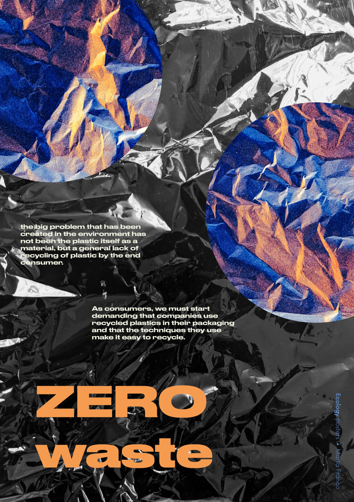
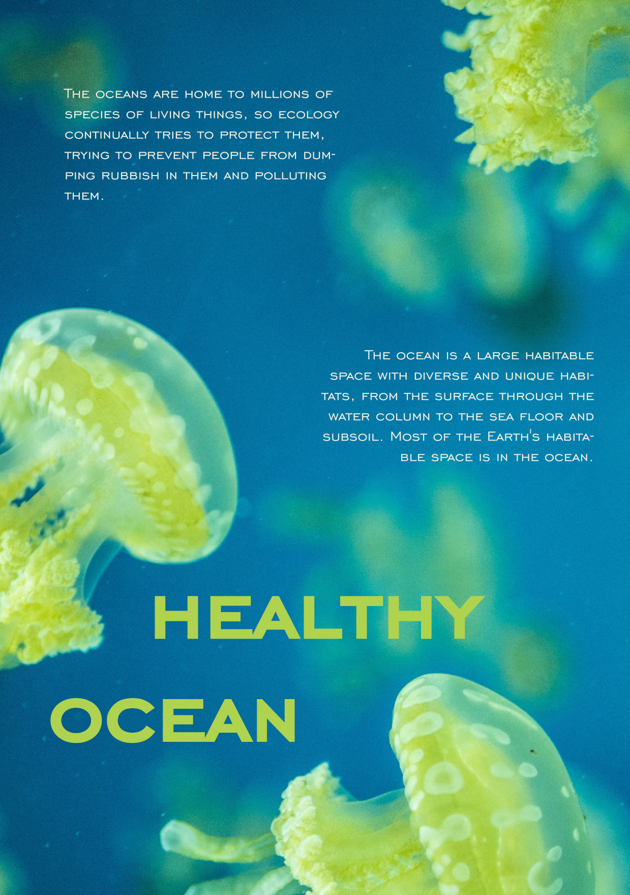
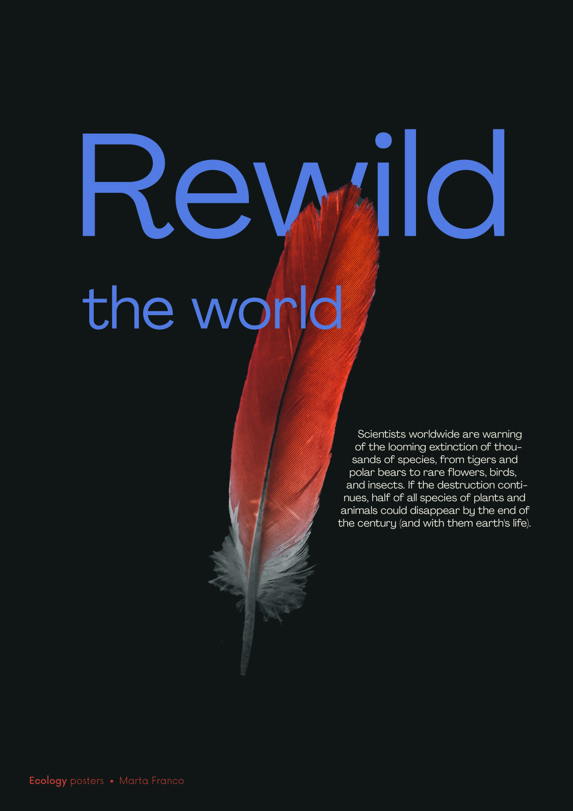
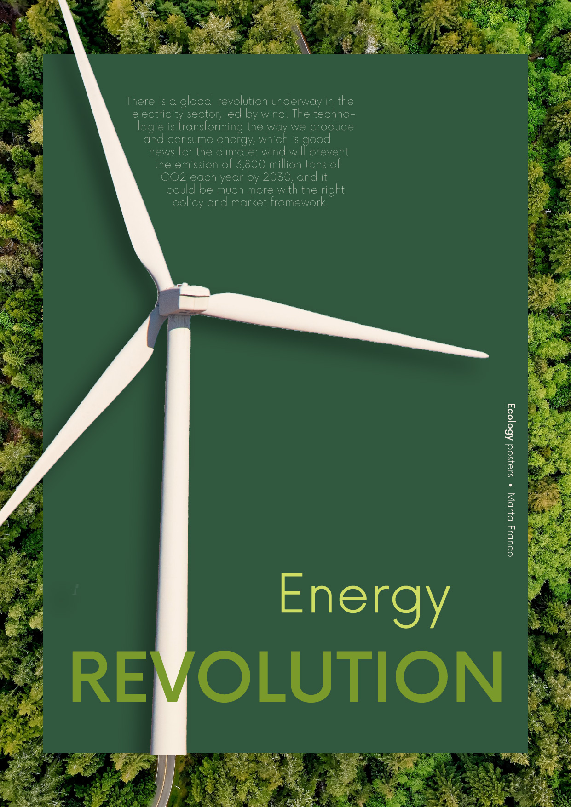
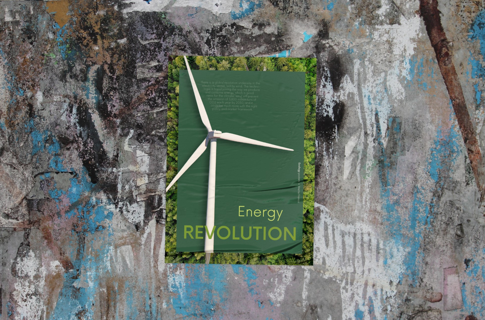
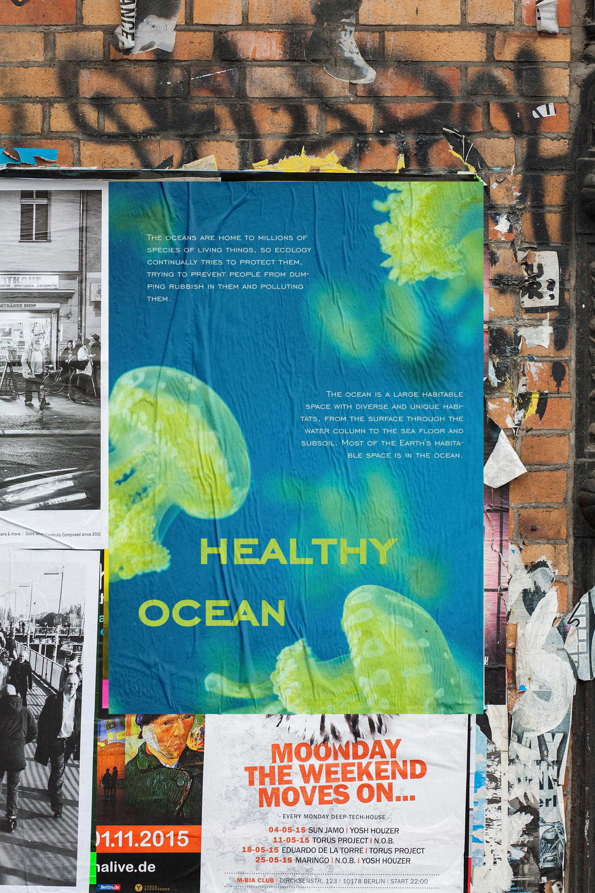

Ecological
— Posters
A serie of posters with the aim of raising awareness of critical environmental issues.


During my participation in the Erasmus program in Slovenia, at the University Faculty of Natural Sciences and Engineering, I developed a project to create customized posters with the aim of raising awareness of critical environmental issues. These posters are designed to specifically address the issue of plastic and litter in oceans, forests and animal habitats, highlighting three main areas of concern.
The first poster focuses on marine pollution and the devastating impact of garbage in the oceans. Using striking imagery and relevant data, it seeks to raise awareness of the importance of marine conservation, motivating viewers to take concrete action to protect our oceans.
The second poster specifically addresses the plastic issue and the crucial role of recycling in mitigating pollution. It highlights the importance of adopting sustainable practices and promoting recycling as a viable solution to reduce the amount of plastic waste that ends up in our ecosystems.




The last poster focuses on the extinction of animals, highlighting the urgency of caring for animal life. It invites us to reflect on our role in the protection of biodiversity and the conservation of natural habitats. These posters send a message of urgency and shared responsibility for the preservation of endangered species.
The tools used for the creation of this posters were Adobe Illustrator and Adobe photoshop.